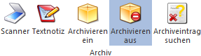

Achtung
Diese Funktionen werden nur mit dem Modul WinLine Archiv I bzw. WinLine Archiv II unterstützt.
Ø Scanner
Wenn ein Scanner angeschlossen ist, können nach Anwahl des Buttons Dokumente für das Archiv eingescannt werden.
Hinweis
Der Scanner muss über eine TWAIN-Schnittstelle verfügen.
Ø Textnotiz
Bei Verwendung des Archivsystems können Textnotizen verfasst und gleich abgespeichert werden.
Ø Archivieren ein
Durch Anwahl dieses Buttons wird bei jedem Ausdruck, der direkt an den Drucker bzw. in den Spooler erfolgt, die SPL-Datei im aktuellen Programmverzeichnis unter dem Namen (Formularname.Mandantennnummer.Benutzernummer.FortlaufendeZahl.SPL) gespeichert und ein Archiveintrag erzeugt.
Hinweis
Alle weiteren Einstellungen (z.B. welche Felder werden Beschlagwortet, wann wird analysiert, etc.) erfolgen im WinLine ADMIN (Menübereich "Archiv").
Ø Archivieren aus
Durch Anwahl dieses Buttons werden keine Ausdrucke "generell" in das Archiv abgelegt.
Hinweis
Neben dieser Einstellung gibt es noch folgende weiteren Möglichkeiten Ausdrucke in das Archiv abzulegen:
ü Option "Archiv" in der Druckersteuerung
ü Steuerelement "Bestimmten Drucker verwenden" mit Zusatz "ARCHIVE" im Formular
Ø Archiveintrag suchen
Über diesen Button kann das Programm "Archiveintrag suchen" aufgerufen werden.